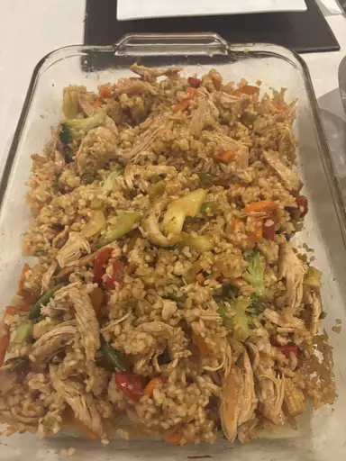

Teriyaki Chicken Casserole

photo by Roula, recipe by Barrett Heald, and tested by Annie Probst
Description
This asian inspired recipe comes together in 45 minutes for an easy weeknight dinner.
Uses a single baking dish for easy clean-up.
Uses ready made or pre-made ingredients to save time
Ingredients
- 1 1/2 cups uncooked, rinsed and drained short grain white rice
- 2 cups boiling water
- 3 cups cooked chicken: rotisserie or pre-cooked bite sized pieces
- 1 12-14oz bag frozen stir fry vegetables: cook to packaged directions
- 1 cup teriyaki marinade and sauce, plus more for serving: pre-made or store-bought
- sliced green onions and sesame seeds: for garnish
- Sriracha sauce and soy sauce: optional, for serving
Steps
- Preheat oven to 350 degrees F (176 degrees C). Lightly grease a 9x13-inch (3-quart) baking dish with cooking spray.
- place rinsed and drained rice in the prepared baking dish: rinsing rice prevents mushy rice. Carefully pour boiling water over rice. Cover dish tightly with foil or lid.
- Bake in preheated oven until water is absorbed and rice is tender, about 20 minutes.
- Remove from oven and let stand, covered, for another 5 minutes. Then, fluff with a fork.
- Stir in pre-cooked or rotisserie chicken, cooked vegetables, and teriyaki sauce until combined.
- Bake, uncovered, until casserole is heated through, about 15 minutes.
- Garnish with green onions and sesame seeds. Serve with additional teriyaki sauce and Sriracha, if desired.
Home